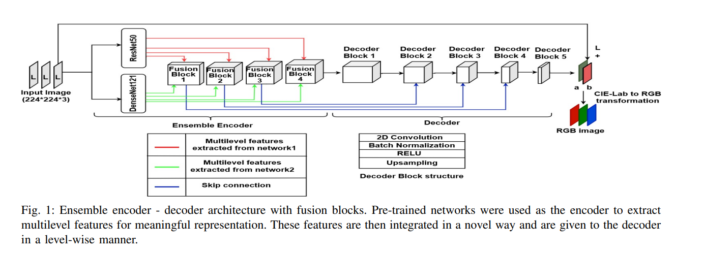
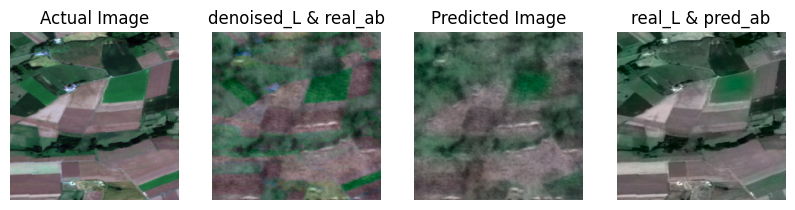
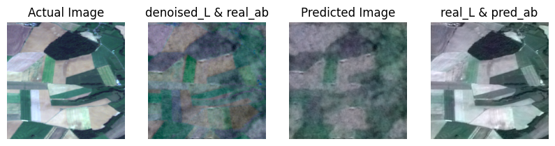
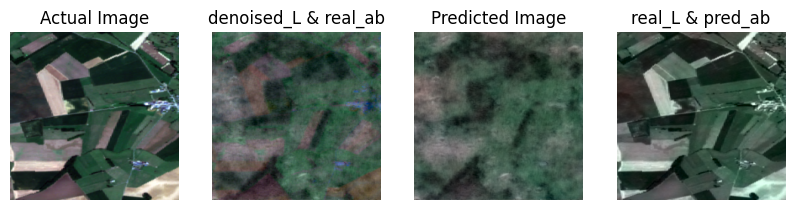
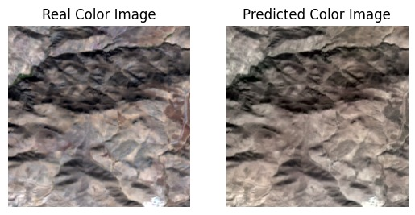
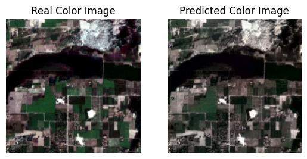
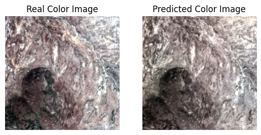
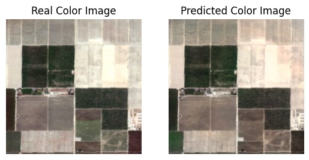

About the Project
This cutting-edge project explores machine learning models for Synthetic Aperture Radar (SAR) image colorization and denoising. Our research combines state-of-the-art deep learning techniques with comprehensive evaluation metrics to achieve superior image processing results.
Project Components
Original Model (Training 1)
Trained on L and AB channels of original color SAR images, this model achieves highly accurate colorization by effectively capturing underlying color information from clean input-output pairs.
Gray Model (Training 2)
Trained on L channel of noisy, denoised SAR images with AB channel of original images. Shows good color prediction but reduced structural definition due to residual noise impact.
Training Pipeline
Comprehensive training notebooks with detailed methodology, hyperparameter tuning, and performance analysis.
Research Lab
Experimental notebooks exploring denoising techniques, FFDNet implementation, and model comparisons.
Gallery









Project Resources
Research References
Automatic Image Colorization using Ensemble of Deep Convolutional Neural Networks
Dhirubhai Ambani Institute of Information Communication Technology (DAIICT) & University of Petroleum and Energy Studies (UPES)
Research on ensemble methods using deep convolutional neural networks for automatic image colorization, exploring multiple CNN architectures for improved color prediction accuracy.